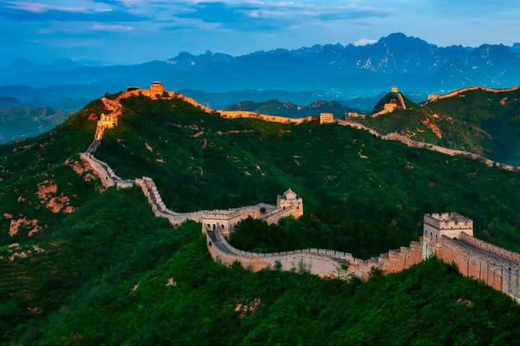
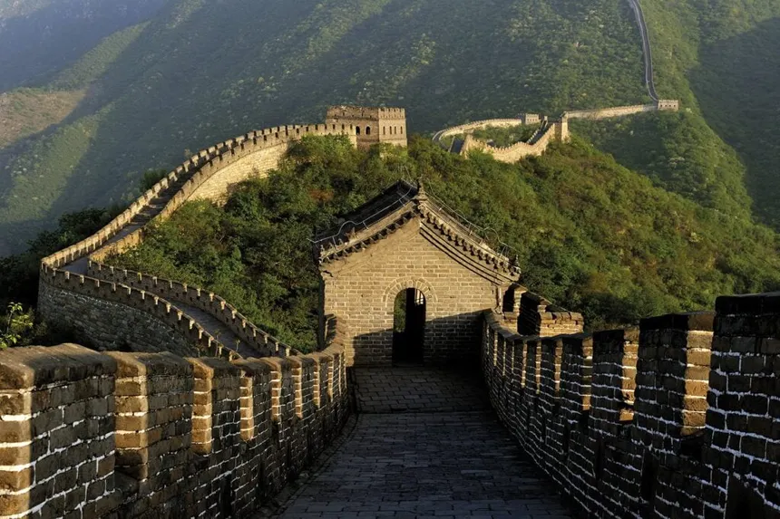
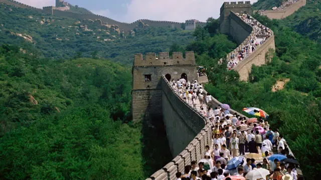

La Gran Muralla China
Publicado por Ignacio Bruno en Octubre de 2025

La Gran Muralla China es una de las obras más monumentales del mundo antiguo, construida para proteger el vasto imperio chino de las invasiones de los pueblos del norte, como los xiongnu y los mongoles. Su longitud total supera los 21.000 kilómetros y serpentea entre montañas, desiertos y llanuras del norte de China. Además de su propósito militar, representó el poder, la disciplina y la organización del imperio.
Con el paso del tiempo, la muralla también funcionó como una vía de comunicación y control fronterizo, donde se cobraban impuestos, se regulaba el comercio y se supervisaban los intercambios culturales con otras civilizaciones. Fue una frontera viva que reflejaba el contacto constante entre oriente y occidente.
Historia
Las primeras fortificaciones datan del siglo VII a.C., cuando varios reinos independientes construyeron murallas para defenderse de sus vecinos. Sin embargo, fue durante el reinado del emperador Qin Shi Huang (221 a.C.) —fundador del primer imperio chino unificado— cuando se conectaron y ampliaron muchas de estas defensas, formando la base de la muralla tal como la conocemos.
Durante las dinastías posteriores, especialmente la Han, la Sui y la Ming, se realizaron ampliaciones y reconstrucciones. La dinastía Ming (1368-1644) fue la que dejó la estructura más famosa y mejor conservada, utilizando ladrillos cocidos, piedra y torres de vigilancia. Bajo su mandato, la muralla se convirtió en un símbolo nacional de resistencia frente a las invasiones y un punto clave para el control del comercio en la Ruta de la Seda.
Además de su función militar, en ciertos periodos históricos se utilizó para promover la identidad nacional y el sentimiento de unidad del pueblo chino frente a las amenazas externas. La muralla fue, en cierto modo, un espejo del desarrollo político y cultural del imperio.
Construcción y Arquitectura
La construcción de la muralla fue una tarea titánica que involucró a millones de trabajadores, entre ellos soldados, campesinos y prisioneros. Los materiales variaban según la región: en las zonas montañosas se usó piedra; en los desiertos, tierra apisonada y arcilla. La muralla incluía torres de vigilancia, cuarteles, almacenes y balizas para enviar señales de humo o fuego.
Cada sección de la muralla se adaptaba al entorno natural. En las zonas más escarpadas se aprovechaban las pendientes y los riscos como parte de la defensa, mientras que en las planicies se reforzaban las murallas con múltiples capas de ladrillo y piedra. Esta combinación de ingeniería y aprovechamiento del terreno demuestra el ingenio técnico de las antiguas civilizaciones chinas.
Cultura y Simbolismo
Más allá de su función defensiva, la Gran Muralla fue un símbolo de la identidad y la unidad del pueblo chino. Representaba la frontera física y cultural que separaba a China de los pueblos bárbaros del norte. En la actualidad, también se interpreta como un ejemplo del esfuerzo colectivo y de la capacidad humana para alcanzar metas extraordinarias mediante la cooperación y la persistencia.
En la literatura y el arte chino, la muralla ha sido fuente de inspiración para poetas, pintores y cineastas. Es considerada un emblema de la determinación y la resistencia del espíritu humano, un recordatorio de que la grandeza se construye ladrillo a ladrillo, con sacrificio y visión.
Turismo
Hoy en día, la Gran Muralla China es uno de los sitios más visitados del planeta. Las secciones más populares son las de Badaling y Mutianyu, cerca de Pekín, que fueron restauradas para el turismo. Cada año, millones de visitantes caminan por sus tramos, admirando las vistas panorámicas y la magnitud de su construcción. La UNESCO la declaró Patrimonio de la Humanidad en 1987, reconociendo su valor histórico y cultural universal.
En las zonas menos conocidas, como Jiayuguan o Jinshanling, los viajeros pueden recorrer partes más antiguas y menos restauradas, donde la muralla se integra con el paisaje desértico y montañoso. Estas áreas ofrecen una experiencia más auténtica y una conexión profunda con la historia.
